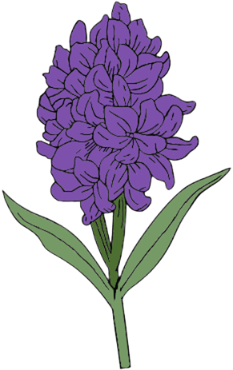

Гіацинт (Hyacinthus)
Короткий опис: щільне суцвіття з ароматних квіток.

Про квітку
Гіацинти відомі своїми щільними суцвіттями та насиченим ароматом, що наповнює весняні сади. Квітки можуть бути синіми, фіолетовими, рожевими або білими, утворюючи яскраві вертикальні «свічки» на фоні зелені.
Вони символізують грацію, пристрасть і весняне відродження. У декоративному садівництві гіацинти цінуються за тривале цвітіння та інтенсивний аромат, який приваблює комах-запилювачів.
Крім декоративної цінності, гіацинти мають історичне значення: їх використовували для створення букетів та композицій ще у давніх садах. Рослина легко вирощується та приживається в домашніх умовах.